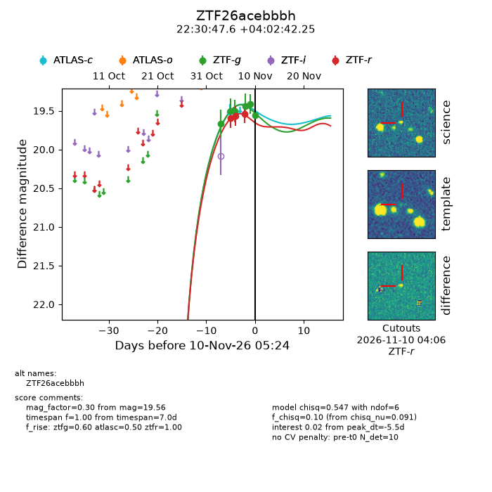
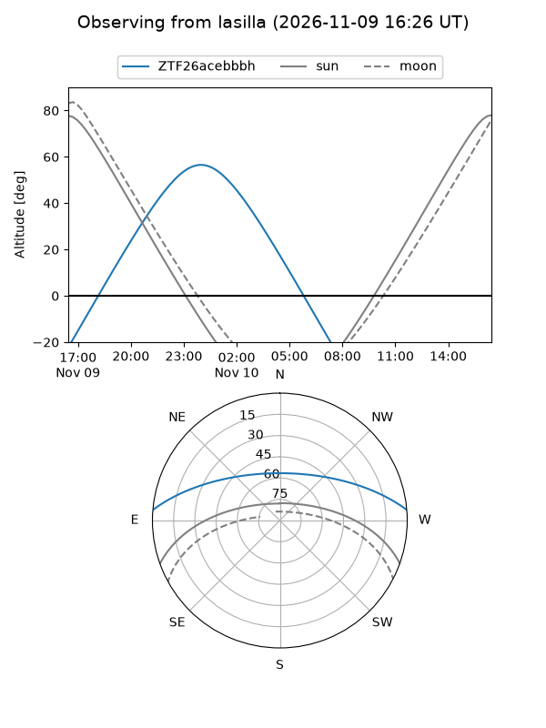
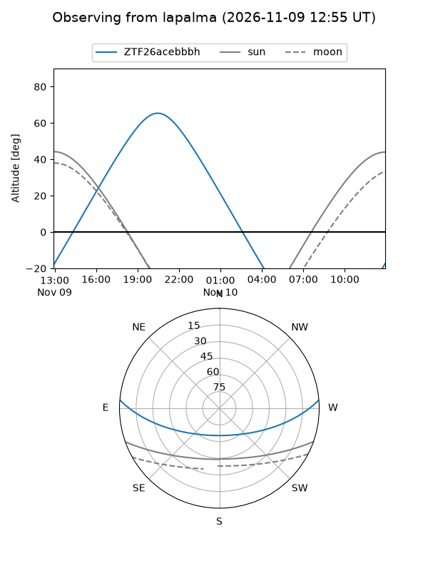
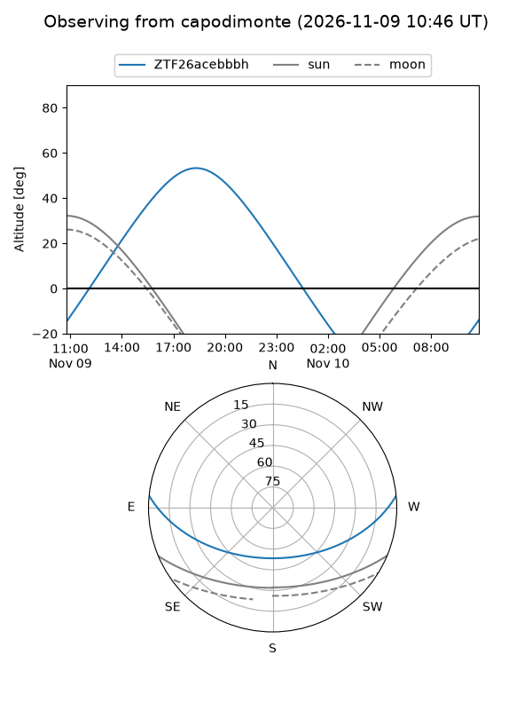
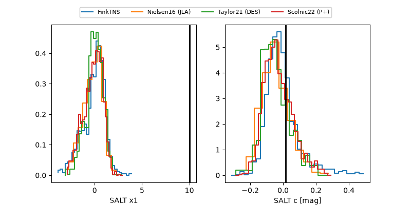

ZTF26acebbbh
Target ZTF26acebbbh at 2026-11-10 05:27
Aliases and brokers:
FINK-ZTF: ztf.fink-portal.org/ZTF26acebbbh
Lasair-ZTF: lasair-ztf.lsst.ac.uk/objects/ZTF26acebbbh
ALeRCE-ZTF: alerce.online/object/ZTF26acebbbh
Direct TNS query: direct search
alt names
ZTF26acebbbh (ztf,fink_ztf)
Coordinates:
equatorial (ra, dec) = 337.6984,+4.04507
equatorial (HMS+DMS) = 22:30:47.62,+04:02:42.25
galactic (l, b) = (70.0439,-43.91731)
Flags:
peak dt: -5.5
Photometry:
last atlasc=19.51, ztfg=19.56, ztfr=19.54
1 atlasc, 6 ztfg, 3 ztfr detections
Lightcurve

Visibility



Additional plots
